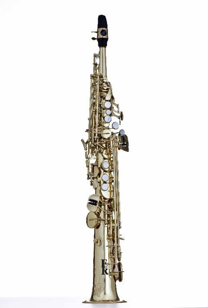
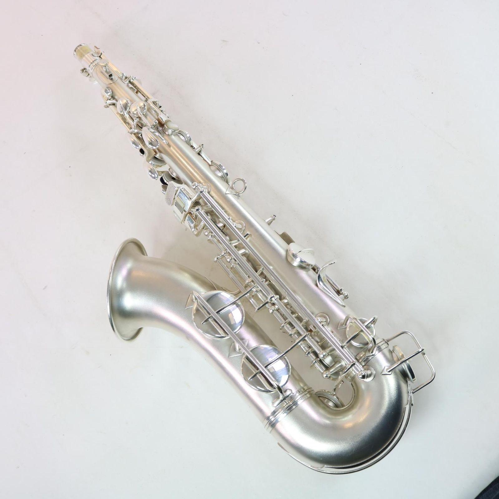
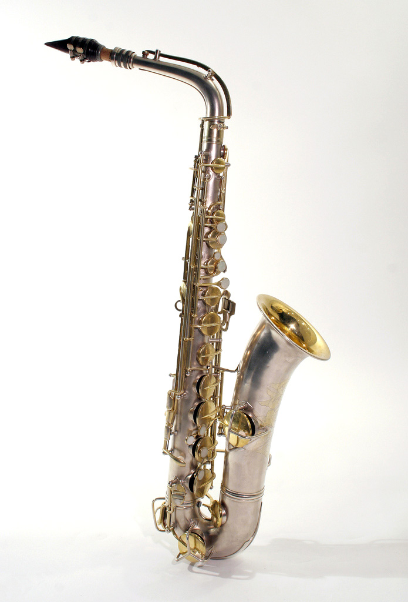
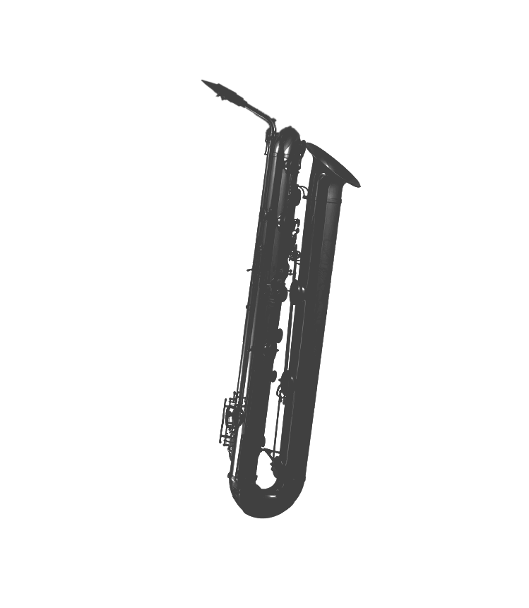

Sopranissimo Saxophone (B♭)

Sopranino Saxophone (E♭)

C Soprano Saxophone (B♭)

Mezzo-Soprano Saxophone (F)

C Melody Saxophone (C)

Bass Saxophone (B♭)

Contrabass Saxophone (E♭)

Subcontrabass Saxophone (B♭)

Tubax (E♭ Contrabass, B♭/C Subcontrabass)
